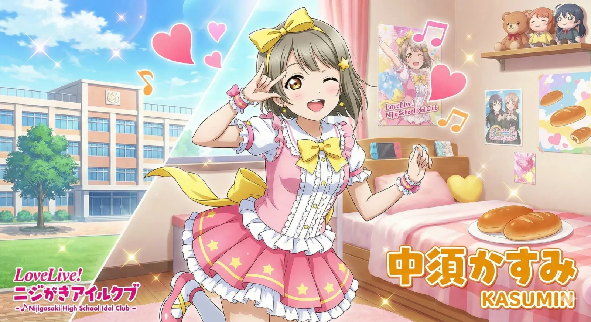
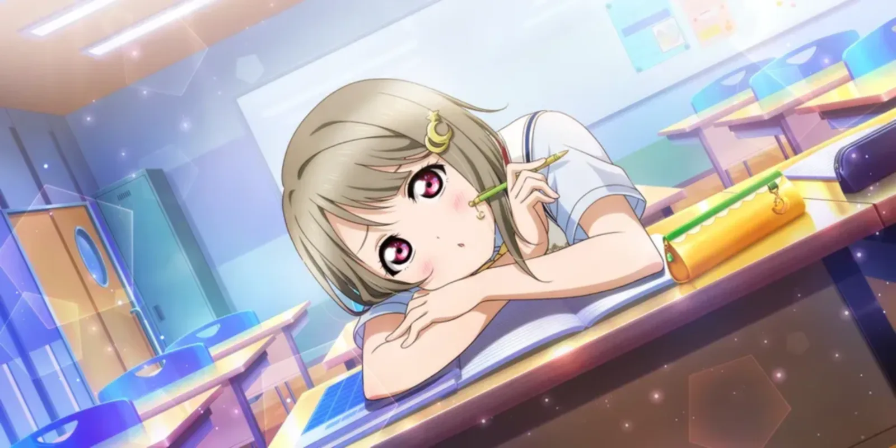
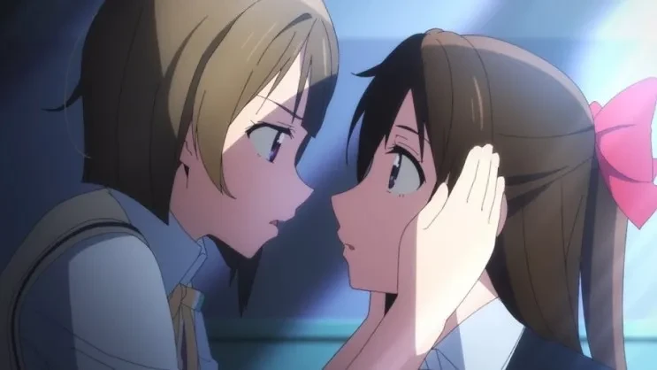

1. 개요

(かすかす~)
かすかすじゃなくてかすみん!
(かわいいよ!)
えへっ☆ありがとう!
모두의 공주 카스밍이야!
(카스카스~)
카스카스가 아니라 카스밍~!
(귀여워~!)
에헷☆고마워!
- 《無敵級*ビリーバー》 MV

니지가사키 학원 고등부 보통과 1학년이자 러브 라이브! 니지가사키 학원 스쿨 아이돌 동호회의 서브 주인공 포지션에 위치한다. 귀여운 것을 좋아하며 스쿨 아이돌에 대한 동경심이 남들보다 강하다. 지기 싫어하는 성격으로, '카스카스[12]'라는 별명으로 부르면 화를 낸다.[5] 물론 팬들은 숨 쉬듯이 카스카스라고 부른다.
2. 특징
그러니까 제일 귀여워지는 게 목표예요!
카스밍은 귀여운 것뿐만 아니라, 즐거운 무대를 만들고 싶어요!
애교 많고 순둥해 보이는 인상과 다르게 라이벌에게 과자를 먹여 뚱뚱하게 만들어 스쿨 아이돌 활동을 하지 못하게 만든다거나, 라이벌의 신발에 빵을 집어넣고 괴문서를 보낸다거나 하는 온갖 음모를 꾸미는 못된 하라구로. 다만 일단 음모를 꾸미긴 하는데 어딘가 어설퍼서 전격 온라인 공식 4컷 만화에서는 괴문서를 작성했을 때 보낸사람 칸에 실수로 자기 이름을 적어버리고, 카린과 세츠나를 놀려먹으려고 여러 개의 빵 중 아주 매운 소스를 넣어둔 딱 한 개를 실수로 자기가 먹어버리는 등 계획대로 잘 풀리지 않고 흐지부지 끝나거나 오히려 훈훈하게 마무리된다. 최근엔 하라구로가 한 바퀴 돌아서 다른 멤버들에게 착한 아이로 취급받기도 한다.
스쿠스타 공식에서 선행공개한 스토리를 보면 발랄하고 소악마 같은 성격 이외에, 적대적 인물을 대할 때는 목소리를 깔고 정색을 하며 차가운 모습도 보여준다.
1인칭은 '카스밍'이며, 드물게 '와타시(私)'를 사용하는 경우도 있다.[6] 원래부터 스쿨 아이돌을 하고 싶었는데, 좋아하는 선배와 함께 활동하고 싶었기 때문에 본격적으로 시작하게 되었다고 한다. 귀여워지기 위한 비밀 훈련을 하고 있을 정도로 귀여움에 관심을 상당히 많이 보이는데, 주변에서 귀엽다는 말을 많이 듣고 있으나[13] 본인은 전혀 그렇게 생각하지 않는다고 한다. 다만 4컷만화에서 자신의 귀여움에 자부심을 가지고 있는 모습으로 보아 단순 인터뷰성 멘트일 수도 있다. 좋아하는 동물은 고양이, 자신과 닮은 동물은 무엇인 것 같냐는 질문에도 고양이라고 답했다.
고로케빵을 좋아하고, 취미는 제빵. 휴일에 친구들과의 약속이 없을 때에는 빵을 만들거나 인기 스쿨 아이돌의 영상을 본다. 체력이 약해 마라톤 등의 운동은 서투르다고 한다. 좋아하는 과목은 실험이나 조합하는 것을 즐거워하기 때문에 과학과 가정, 자신은 언제나 미래를 보고 있어서 과거를 돌아보는 데에는 서툴기 때문에 싫어하는 과목은 고문과 역사며 가장 지고 싶지 않은 라이벌이 니지동 내에 존재하지만 정작 라이벌은 전혀 그렇게 생각 안 하고 있는 거 같다.
겁쟁이라 무서운 것을 싫어한다. 또한 도마뱀 같은 파충류도 싫어한다. 그리고 간지럼을 타지 않는 타입이다.
2.1. 자기소개

2.2. 유튜브 메시지
공식 유튜브 채널을 통해 다양한 활동 메시지를 남기고 있다.
자기소개
TOKIMEKI Runners 솔로곡 메시지 영상
2.3. 외형



2번 캐릭터들의 머리색인 베이지색 머리카락을 지녔다. 생머리에 단발 머리가 특징으로, 왼쪽 머리가 오른쪽 머리에 비해 조금 더 길다. 첫 솔로곡 복장의 치마도 비대칭이다. 옆머리에 초승달 모양의 노란색 머리핀을 두 개 꽂고 있는 것도 포인트. 눈은 분홍색에 동그란 눈인데, 코이즈미 하나요[14]와 타카미 치카, 츠시마 요시코에 이어 분홍색 눈 캐릭터가 또 등장했다. 순둥순둥하고 예쁘장한 동안의 외모와 다르게 하라구로라는 것이 갭 모에 중 하나.
리나와 함께 니지동의 꼬마, 귀요미를 담당하고 있다. 다만 카스미가 애교로 귀여움을 과시한다면, 리나는 앳된 외모와 새끼 고양이 같은 이미지가 귀여움 포인트라는 차이점은 있다.
2.4. 보컬 스타일
연기 톤과 목소리가 상당히 비슷한 캐릭터로, 딱 "카스미스러운" 목소리를 낸다. 하지만 가창력 면에서는 야자와 니코처럼 하이톤의 목소리를 쥐어짜는 창법을 구사하기 때문에 높은 평가는 받지 못하고 있다.[15] 다만 이건 카스미의 캐릭터가 가창력을 크게 요구하지 않아서 그런 거고, 성우 사가라 마유의 가창력 자체는 좋은 편이다. 따라서 코토리, 루비, 리나처럼 성우의 가창력과 캐릭터의 가창력이 일치하지 않는 경우라고 볼 수 있다.
아직까지 노래를 불러본 경험이 많지 않아 1st Live까지는 음이탈이 좀 있고 흔들리는 등 가창력과 안정성이 좀 미숙한 편이지만, 시간이 지나면서 나아진 사례들이 상당수 존재하기 때문에 안정적인 라이브를 보여줄 가능성은 남아 있으며, 러브 라이브! 페스와 2nd Live에서는 한 층 발전된 가창력을 선보였다. 가창력과 별개로 성우의 진행 능력과 활기찬 곡 분위기 덕분에 라이브에서는 분위기를 잘 띄우는 편이다.
2.5. 휴일 스케줄
| 전격 온라인에서 공개된 휴일 스케줄 | |
|---|---|
| 01:00 ~ 09:00 | 꿈 속입니다. 깊게 잠들어서 그런지, 별로 꿈을 꾸지는 않았어요. |
| 09:00 ~ 11:00 | 일어났습니다. 세수하고 아침식사입니다. |
| 11:00 ~ 13:35 | 오늘은 휴일이니까 동영상을 볼 거예요. |
| 13:35 ~ 15:00 | 정신을 차려보면 2시간이 지나 있었습니다. 슬슬 점심식사. |
| 15:00 ~ 17:30 | 취미인 제빵을 시작해요. |
| 17:30 ~ 19:00 | 빵 만들기는 신경을 써요. 조금 쉬면서 저녁식사. |
| 19:00 ~ 20:00 | 잠깐 쉬었다면 조금만 달리기를 합니다! |
| 20:00 ~ 21:00 | 목욕 시간이라구요. 뭘 하는 건가요! |
| 21:00 ~ 22:00 | 이 시간에 무엇을 하는지는 비밀이에요. |
| 22:00 ~ 23:00 | 동영상을 보면서 이불로~ 이번 장난 내용도 겸사겸사 생각해둬야겠어요...Zzz |
3. 효빈광역시와의 관계 (중수동 유니버스)
"⚖️ 범죄자 여러분! 카스밍의 정의의 코페빵(물리) 맛좀 보실래요?"
효빈시 한정으로 카스미는 무소불위의 권력을 휘두르는 사법기관의 수장이자, 박효빈 시장이 국정 운영보다 더 진심으로 모시는(?) 절대존엄 성역 그 자체이다. 효빈위키 등지에서는 이 기막힌 우연과 덕업일치의 향연을 '중수동 유니버스'라고 부른다.
3.1. '나카스(中須)' 영지의 탄생과 중수역
효빈광역시 북구에 위치한 중수동은 카스미의 성씨인 '나카스(中須)'와 한자가 완벽하게 동일하다. 이 사실이 서브컬처 커뮤니티에 발굴된 이후, 팬들 사이에서는 이곳을 '카스밍 랜드' 혹은 '나카스 영지'라고 부르며 단숨에 대한민국 최고의 성지로 떠올랐다. 동사무소 직인이 찍힌 전입신고서를 굿즈랍시고 코팅해 다니는 광신도들이 속출했다.
특히 중수동의 심장부이자 교통의 요지인 중수역은 사실상 '카스밍 성지순례'의 시작점이다. 역명판 테두리가 은근슬쩍 카스미의 상징색인 파스텔 옐로우(#E7D600) 계열로 도색되어 있는데, 효빈교통공사 측은 "단순한 조명 반사 및 색상 오차일 뿐"이라며 모르쇠로 일관 중이다. 한때 부역명을 아예 '카스미 랜드'로 지정하려다 시의회의 극렬한 제지로 무산되었다는 전설적인 썰이 내려오며, 이를 주도한 인물이 누구인지는 특정 1인으로 강하게 좁혀지고 있다.
이러한 컬트적인 인기 덕분에 중수역 지하 대합실 중앙 광장에는 카스미의 대형 실물 크기 등신대가 위풍당당하게 설치되어 오가는 시민들을 맞이하고 있다. 이외에도 HJ몰 중수점, 심지어 효빈대학교 사회복지정책학과 과방(...) 등 동네 곳곳에서 카스미의 흔적을 쉽게 찾아볼 수 있다. 사회복지정책의 핵심은 시민들의 마음을 치유하는 '귀여움'이라는 학과장의 무논리 기적의 논리 덕분이다.
3.2. 사가라 마유 방문 및 혐오자 참교육 사건 (202X)
성우 사가라 마유가 효빈시 투어 일정 중 중수역을 방문했을 때, 유치장에서 막 출소한 악질 혐오자들(A씨, 윤재훈)이 난동을 부리려다 0.1초 만에 제압당한 통쾌한 사건이다.
이전에 보몽역 등지에서 어그로를 끌다 구금되었던 A씨와 윤재훈은 풀려나자마자 반성은커녕 "시장 관저가 있는 중수역을 타격하여 일본 아이돌과 오타쿠 시장을 이 땅에서 몰아내자!"며 지들 딴에는 비장한 독립투사 빙의 습격을 모의했다. 그러나 능지가 처참했던 A씨가 인터넷 커뮤니티(에브리타임)에 "오늘 중수역에서 씹덕들 다 죽인다ㅋㅋ"라는 범행 예고 글을 올리는 멍청한 짓을 저지른 덕분에, IP 추적을 마친 사이버수사대와 현장에 잠복 중이던 특공대에게 도착하자마자 아스팔트 바닥에 꽂히며 제압당했다.
소란을 목격한 사가라 마유는 평소의 쾌활하고 장난기 넘치는 미소를 거두고, 싸늘하게 정색하며 "당신들, 일본이었으면 사회적으로 완전히 매장(埋葬)이에요. 타인의 행복을 짓밟는 건 명백한 범죄입니다."라고 일갈했다. 평소 하라구로와 귀여움을 넘나드는 카스미의 본체가 뿜어낸 이 압도적인 여왕님 포스는 '흑막 카스미의 현실 강림'이라며 팬들의 열광적인 환호를 받았다.[7] 앙심을 품은 A씨 등이 사가라 마유의 SNS에 기어들어가 악플을 달았으나, 분노한 전 세계 럽라이버들의 십자포화 신고로 단 10분 만에 계정이 흔적도 없이 영구 정지 당했다. A씨는 이후 커뮤니티에 "인스타도 마커스버그의 좌파 기업이다"라는 헛소리를 늘어놓다 조롱거리만 되었다.
3.3. 효빈대 베르데 홀 '메카쿠시테' 사건과 인간 벽
효빈대학교 베르데 홀에서 열린 니지가사키 학원 스쿨 아이돌 동호회 공식 토크쇼 직전, 징그러운 생명력을 자랑하는 혐오자 A씨와 윤재훈이 다시 난입하여 오사카 시즈쿠 & 나카스 카스미 등신대를 전기톱(...)으로 파괴하기 위해 돌진하는 충격적인 테러 미수 사건이 발생했다.
절체절명의 순간, 현장에 있던 수백 명의 학생과 팬들이 약속이라도 한 듯 일제히 일본어로 "메카쿠시테(눈 가려)!!!!"라고 피를 토하듯 떼창하며 대응하는 기적을 선보였다. 이 결사적인 외침에 현장 통역사와 매니저들은 즉시 성우 마에다 카오리와 사가라 마유의 눈과 귀를 필사적으로 막았고, 맨 앞줄에 있던 박효빈 시장과 럭비부 학생들은 즉각 '인간 벽(고기방패)'을 형성하여 범인의 추악한 난동을 성우들이 1mm도 보지 못하게 완벽히 차단했다. 이날 효빈시의 시민 의식(민도)이 우주를 뚫고 승천하여 뽕 치사량을 초과했다 카더라.
현장에서 VIP석에 앉아있던 박효빈 시장은 "감히 내 최애 조합에 무슨 짓이야!"라며 넥타이를 풀어 헤치고 극대노하여 진성 오타쿠임을 전 국민 앞에 다시 한번 인증했다. 시장의 수행 비서관 역시 정장 마이가 찢어지는 것도 불사하고 몸을 던져 치카리코 패널을 사수했으며, 찰진 한국어 쌍욕으로 범인의 기선을 제압해 쫓아냈다. 이 비서관의 쌍욕은 훗날 법정에서 '물리적 충돌을 막기 위한 최후의 음파 방어기제이자 정당방위'로 무죄 판결(?)을 받으며 네티즌들의 열렬한 찬사를 받았다.
사건 직후, 팬들의 눈물겨운 보호에 크게 감동받은 성우 마에다 카오리와 사가라 마유는 일정을 쪼개어 효빈대 사회복지정책학과 학생회실(과방)을 비밀리에 직접 방문했다. 두 사람은 무사히 생환한 '시즈쿠 & 카스미' 패널에 감사의 코멘트와 친필 사인을 남겼으며, 현재 이 전설적인 패널은 과방 내에 두께 5cm짜리 방탄 아크릴 케이스가 씌워진 채 국보 1호급으로 모셔져 있다. 타과생이 구경하려면 학생증 지참은 기본이고, 니지가사키 멤버 전원의 이름을 외워야 하는 깐깐한 입구 컷이 적용 중이다.
3.4. 박효빈 시장의 '골든 로드 (다이아몬드 워크)' 조성 비화
중수역 일대 보행로 약 2km 구간이 최고급 대리석 질감의 특수 포장과 스마트 조명으로 화려하게 재정비된 이른바 '중수동 다이아몬드 워크(골든 로드)' 사업에는 박효빈 시장의 지독하고 치밀한 '덕심'이 아주 깊게 관여되어 있다.
과거 사가라 마유가 내한했을 때 "다음에 오면 런웨이라도 해야겠네요~", "시장님, 나카스(中须)라서 일부러 여기 관저 잡으신 거죠? 저희 이웃사촌이네요!"라고 장난스레 농담을 던졌는데, 이 한마디에 뇌세포가 폭주한 박 시장이 "우리 여왕님이 걸으실 길을 조악한 아스팔트로 둘 수는 없다. 완벽하게 만들어야 한다!"며 해당 부서 공무원들을 갈아 넣어 밤샘 야근을 통해 직접 기획안을 작성했다.
겉보기엔 혈세로 덕질을 하는 횡포 같지만, 실상은 유니버설 디자인(무장애 보행로)과 CPTED(범죄예방환경설계)가 극한으로 적용된 고도의 도시 재생 및 주민 복지 사업이었다. 명분만 카스미를 위한 '런웨이'였을 뿐, 단차를 완전히 없애 휠체어 이용자나 유모차, 노약자도 걷기 편해졌고, 사각지대 없는 스마트 조명 덕에 야간 우범지대였던 골목의 범죄율이 제로에 수렴하게 되어 해당 지역 주민들의 지지가 압도적이다. 물론 세금으로 자기 사심을 200% 채웠다는 합리적 의심은 지울 수 없지만, 결과가 훌륭하고 집값이 오르니 모두가 눈감아주고 있다.
사업 완공 후, 결국 효빈시는 나카스 카스미(캐릭터 본인)에게 효빈광역시 명예시민증 1호를 수여하는 기행을 저질렀다. 가상 캐릭터에게 덜컥 명예시민증을 준 것은 전례가 없는 일로, 시청 내부 고발자에 따르면 문서 결재 당시 박효빈 시장이 입이 귀에 걸린 채 콧노래를 부르며 서명했다는 증언이 있다. 여담으로, 공식 석상이나 브리핑에서는 '카스미 양'이나 '명예시민님'이라고 깍듯하게 존칭을 쓰지만, 사석이나 측근들 앞에서는 애정을 듬뿍 담아 장난스럽게 "카스카스"라고 부른다는 소문이 파다하다. 시장님, 그러다 명예시민님께 코페빵에 캡사이신 듬뿍 발라져서 테러 당하십니다.
3.5. 검은 페인트 테러 미수와 카스밍 빔
완공된 '골든 로드'의 눈부신 화려함이 "엄숙해야 할 대한민국의 도시가 일본 애니 캐릭터 따위 때문에 경박해졌다"며 앙심을 품은 혐오자 윤재훈과 A씨가, 인적이 드문 새벽 3시에 몰래 공업용 검은 페인트와 오물을 거리에 뿌려 런웨이를 망치려다 스스로 자멸한 코미디 같은 사건이다.
그러나 그들은 골든 로드에 깔린 최첨단 인프라를 얕보았다. 박 시장이 심혈을 기울여 설치한 지능형 스마트 폴(가로등)의 AI 센서가 거동 수상자의 비정상적인 패턴을 즉각 감지했고, 범행을 저지르려던 찰나 시야를 멀게 할 정도로 강렬한 파스텔 옐로우 핀 조명(일명 카스밍 빔)과 함께 120dB의 경고 방송("동작 그만! 무적급 빌리버가 지켜보고 있다!")을 송출했다. 칠흑 같은 어둠 속에서 갑자기 눈뽕 조명과 굉음을 맞고 기겁한 두 사람은 발을 헛디뎌 본인들이 준비한 똥물과 검은 페인트를 본인들의 머리 위에 고스란히 쏟아부었고, 그 처참한 몰골로 핀 조명을 한 몸에 받으며 달려온 주민들과 경찰에게 현행범으로 체포되었다.
결말적으로 상습범이었던 윤재훈은 징역 5년, A씨는 징역 2년 6개월 및 정신과 치료감호 처분을 받으며 사회에서 영구 격리되는 참교육을 당했다. 사건 며칠 뒤, 사가라 마유는 이 소식을 전해 듣고 라디오 방송에서 "검은색은 전혀 안 귀여워요! 시장님의 조명이 나쁜 사람들을 스스로 물리치게 했네요~ 역시 정의는 승리합니다!"라며 유쾌하게 반응해 팬들을 빵 터지게 만들었다.
3.6. HJ몰 대박 콜라보와 이차야 참교육 사건
"이거 쇼핑몰 주소 이름이 그 애니 캐릭터랑 한자가 같네? 허허 참 재밌네! 딴지 걸지 말고 당장 진행시켜!"
- 박성인 회장, 기획안을 결재하며
2024년, 회주유통 마케팅팀의 덕력 깊은 한 신입 사원이 HJ몰 본점이 위치한 '중수동(中须洞)'과 카스미의 성씨 '나카스(中须)'의 한자가 일치한다는 점을 교묘하게 활용해, 과감하게 콜라보레이션 팝업 스토어 기획안을 올렸다. 당시 기획 회의에서 극소수의 '꼰대' 임원들이 "어디 근본도 없는 일본 서브컬처 쪼가리 행사를 우리 프리미엄 쇼핑몰에서 하느냐", "브랜드 가치가 떨어진다"며 책상을 치며 결사 반대했으나, 평소 트렌드에 열려있던 대기업 총수 박성인 회장이 기획안의 화제성을 알아보고 단칼에 쿨하게 승인하며 정식 협약이 체결되었다.
결과는 말 그대로 초대박이었다. '중수동에서 만나는 나카스(中须)'라는 슬로건으로 진행된 생일 카페와 팝업 스토어는 전국 단위의 오픈런을 유발했고, 회주공업의 고품질 원료로 찍어낸 한정판 피규어와 굿즈는 오픈 10분 만에 서버를 다운시키며 전량 매진되었다. 행사 첫날 점심시간, 박효빈 시장이 수행원도 팽개치고 사복 차림으로 나타나 매우 황홀하고 행복한 표정(...)으로 굿즈를 장바구니에 쓸어 담고, HJ몰 멤버십 포인트 적립까지 야무지게 챙겨가는 모습이 시민들에게 적나라하게 목격되어 덕업일치의 최고봉이자 시정 농단 큰 웃음과 충격을 선사했다.
■ 꼰대 임원들의 최후: 카스밍의 저주(?)
여담으로, 당시 콜라보를 "천박하다"며 결사반대하고 훼방을 놓았던 소수의 임원들은 행사가 끝난 지 불과 한 달도 되지 않아 협력업체 리베이트 수수, 납품 단가 후려치기 등 별개의 사내 횡령 비리가 내부 감사에서 무더기로 적발되었다. 이를 보고받고 극대노한 박성인 회장이 "우리 그룹에 썩은 사과는 필요 없다"며 이들을 단칼에 전원 해고(숙청)해 버리는 완벽한 참교육 엔딩을 맞이했다. 팬들 사이에서는 이를 두고 "정의의 코페빵(물리) 대신 회장님의 해고 통지서(물리)가 날아갔다", "카스밍을 억까하면 삼대가 망한다는 카스밍의 저주가 실존한다"며 축제를 벌였다.
■ 이차야 패널 파손 미수 사건
콜라보 행사가 절정에 달하던 주말, 극우 단체 '윤대모'의 핵심 회원이자 악질 네임드 악플러인 '이차야'와 그 똘마니들이 난입하여 무대 중앙의 대형 등신대 패널을 부수려 시도했다. 그러나 하필 그 시간, 현장 순찰을 핑계로 매일 출석 도장을 찍고 있던 박효빈 시장과 HJ몰 기획 담당자(이쪽도 알고 보니 진성 카스미 오시)에게 딱 걸리고 말았다.
현장 목격담에 따르면, 박 시장은 소중한 패널이 훼손될 위기에 처하자 눈이 뒤집혀 "아, 씨X 새X들아!!"라며 육성으로 쌍욕이 튀어나올 뻔했으나, 296만 시민을 대표하는 시장의 체면 때문에 입술에서 피가 날 정도로 꽉 깨물며 억지로 참아냈다고 한다. 이차야 일당은 안경을 쓰고 말라 보이는 시장을 만만하게 보고 멱살을 잡으려 덤볐으나, 사실 시장은 매일 헬스장에서 쇠질을 하는 숨겨진 근육질(일명 힘숨찐)이었고, 시장과 마케팅 담당자의 압도적인 피지컬 어깨빵에 튕겨져 나가 패널 근처에는 손가락 하나 대지 못했다.
결국 당황하여 스텝이 꼬인 이차야 일당은 자빠지면서 옆에 있던 수백만 원짜리 명품 도자기 장식물과 진열장을 와장창 파손해버렸고, 즉시 출동한 경찰에 영업방해 및 재물손괴로 연행되었다. 막대한 손해배상금과 합의금을 물어내며 "가상 애니 캐릭터한테 열폭하다가 진짜 금융 치료 씨게 당했다"는 전국구 조롱거리가 되었다. 당시 제압 직후 시장은 바닥에 엎어진 이차야를 내려다보며 "감히 내 카스미짱을 건드려?"라며 평소의 온화한 모습과는 180도 다른 살벌한 눈빛을 보였다고 전해진다.
3.7. 중수청(KBI) 초대 청장 취임(?)
2026년, 대한민국의 검경 수사권 조정 및 권력 분산의 일환으로 효빈시 중수동에 독립된 수사 기관인 효빈중대범죄수사청이 개청하게 된다. 공교롭게도 이 기관의 공식 약칭이 '중수(中搜)청'이었다.
지명인 中须(나카스)와 기관명인 中搜(중수)가 발음이 완벽하게 같다는 엄청난 우연(일각에서는 박효빈 시장이 중앙 부처에 로비까지 해가며 설계한 치밀한 큰 그림이라고 주장한다)이 겹치자, 인터넷 서브컬처 커뮤니티에서는 "나카스 카스미가 기어이 대한민국의 핵심 수사 권력까지 장악했다"는 밈이 핵폭탄급으로 폭발했다.
- 졸지에 중수청은 영문 약칭인 H-CBI 대신, 서브컬처 팬들 사이에서 KBI (Kasuming Bureau of Investigation, 카스밍 연방 수사국)로 굳어져 버렸다.
- 카스미 특유의 하라구로(속이 검음) 속성은 '피도 눈물도 없이 용의자를 옥죄는 치밀한 함정 수사와 악랄한 압박 심문 기법'으로 포장되었다.
취조실에서 수사관에게 "카스카스"라고 부른 죄명으로 괘씸죄가 적용되어 형량이 2배로 뻥튀기된다는 괴담이 공공연하게 돈다. 재판장: 피고인은 조사 과정에서 피해자(청장님)를 향해 감히 카스카스라고 지칭한 바, 이는 사실상 국가원수 모독죄에 해당하므로 무기징역에 처한다... - 효빈시 공무원들도 아예 이 밈에 절여졌는지, 실제 중수청 현판식 날 해당 구역을 지나는 순환버스(노란색) 정류장의 LED 전광판 이름이 은근슬쩍 '중수청(카스미로드)'로 병기되어 송출된 적이 있다.
이날 행사 식전 안내방송 브금으로 카스미의 솔로곡 '무적급*빌리버'의 반주가 흘러나온 건 안 비밀이다.
3.8. 시내버스(순환 노선) 도색의 기막힌 우연과 흑역사
효빈광역시를 달리는 시내버스 중 순환 노선의 차량 도색이, 훗날 등장한 카스미의 공식 이미지 컬러인 파스텔 옐로우(#E7D600)와 RGB 헥스 코드까지 소름 돋게 완벽하게 일치한다는 사실이 밝혀지며 팬들을 그야말로 경악하게 만들었다.
초창기 이 사실이 알려졌을 때 일각에서는 "박효빈 시장이 기어이 대중교통 도색에까지 본인의 씹덕력을 투영해버렸다", "시장의 명백한 직권남용이자 도색 예산 낭비다"라는 지극히 합리적이고 타당한 의혹이 강하게 제기되었다.
하지만 이러한 의혹을 완벽하게 잠재우기 위해서는 효빈시 버스 도색의 참혹했던 흑역사를 먼저 짚고 넘어가야 한다. 2세대 버스(2003~2007년) 시절, 이른바 '두청운수'가 주도했던 시내버스 도색은 시민들에게 구토를 유발하는 우중충한 갈색(일명 똥색)이었다. 당시 75인승이라는 경악스러운 짐짝 과적, 엉덩이가 부서질 듯한 싸구려 플라스틱 시트, 거기에 양심 없는 요금 폭리까지 겹치며 이 '똥색 버스'는 효빈 시민들에게 영원히 지우고 싶은 끔찍한 트라우마로 남았었다.
이러한 흑역사를 완벽히 청산하기 위해 효빈시는 2008년, 대대적인 대중교통 혁신인 '스타더스트 작전(3세대 버스 도색 개편)'을 단행했다. 이때 각 노선별로 산뜻한 색상을 부여했는데, 간선은 스카이 블루(시즈쿠), 지선은 제이드 그린(시오리코), 그리고 대망의 순환 노선에 파스텔 옐로우(카스미)가 배정된 것이다.
즉, 이 도색은 박 시장의 취임보다 한참 전이자, '나카스 카스미'라는 캐릭터가 세상에 디자인되기도 약 10년 전인 2008년에 제정되어 현재까지 이어져 온 것이다. 그야말로 시공간을 초월한 우주적이고 기막힌 우연인 셈이다. 이 진실이 밝혀지자 팬들 사이에서는 "시장님이 타임머신을 타고 미래로 가서 니지가사키를 정주행하고 온 뒤 색을 정했다", "나카스 영지(중수동)의 완벽한 지배는 2008년부터 이미 일루미나티급으로 치밀하게 계획되어 있었다"는 농담 섞인 음모론이 정설(?)로 굳어졌다. 이쯤 되면 우주가 럽라이브를 돕고 있는 게 분명하다.
현재 중수동 일대를 순회하는 파스텔 옐로우 도색의 순환버스가 중수역 정류장이나 HJ몰 앞에 정차할 때면, "카스밍이 영지를 순방하러 행차하신다"며 버스를 배경으로 카스미 네소베리(인형)나 아크릴 스탠드를 들고 인증샷을 찍는 덕후들의 모습을 심심치 않게 볼 수 있다. 심지어 덕력이 높은 일부 순환버스 기사들은 이 사실을 즐기며, 카스미 생일(1월 23일) 즈음이 되면 자비로 운전석 대시보드 주변에 노란색 꽃이나 카스미 인형을 조그맣게 달아놓고 운행을 하기도 한다고 전해진다.
3.9. 우주가 점지한 성지: '중수카스미 아파트'와 박효빈 시장 사저 논란
- 세금 낭비 논란이 터지자 2015년 건축물대장을 흔들며 절규하는 박효빈 시장
효빈광역시 북구 중수동 123-2(중수4동), 중수역(2호선·6호선 환승역) 바로 인근에는 무려 '중수카스미 아파트(Jungsu Kasumi Apt)'라는 실존 대단지 아파트(12개 동, 지상 30층 규모)가 자리 잡고 있으며, 현재 이곳에 박효빈 효빈광역시장의 사저(私邸)가 위치해 있다.
2022년 박효빈 시장이 취임과 동시에 기존 시장 관저를 시민 문화 공간으로 환원하고 이 아파트에 자비(전세/매매)로 입주했을 당시, 윤재훈과 반대파들로부터 "오타쿠 시장이 미쳐서 자기 최애 캐릭터인 나카스 카스미의 이름을 딴 초호화 주상복합 펜트하우스를 시 예산으로 지어 입주했다!"라는 맹폭을 당했다. 심지어 항공사진으로 본 12개 동의 단지 배치도가 붉은 별(★) 모양을 띠고 있고 외벽 포인트 도색이 파스텔 옐로우(#E7D600)와 레드여서, 덕후들조차 "시장님이 나카스 카스미와 옆 동네 토야마 카스미를 동시에 모시려고 세금으로 연성진을 그렸다"며 혀를 내둘렀다.
그러나 밝혀진 진실은 그야말로 '우주가 도운 기적'이었다. 해당 아파트는 박효빈 시장이 정계에 입문하기도 훨씬 전이자 대학교 1학년으로 편의점 폐기 도시락을 먹던 2015년에 지역 민간 건설사인 '효빈건설'이 준공해 일반 분양한 평범한 대단지 아파트였던 것이다! 당시 효빈건설 사장이 일본 유학파여서 중수동(나카스) 지명과 안개 하(霞, 카스미) 자를 결합해 '중수카스미'라 이름 붙였고, 일조권을 고려해 방사형(별 모양)으로 배치한 것이 우연히도 2017년 탄생한 나카스 카스미 및 뱅드림 토야마 카스미의 상징과 100% 일치해 버린 것이다.
- 억울함에 피를 토하던 박효빈 시장이 기자회견장에서 2015년 건축물대장 원본을 흔들며 해명하자, 억까 세력은 단숨에 아닥했고 전 세계 서브컬처 팬들은 "시장이 아파트를 지은 게 아니라, 우주가 2015년에 미리 지어놓은 성지에 성덕 시장이 제 발로 찾아 들어간 것"이라며 경악했다.
- 단지 내 상가 1층에는 '카스밍의 비밀 베이커리'라 불리는 제과점이 입점해 매일 아침 갓 구운 코페빵을 구워내며, 단지 지하 커뮤니티 시설에는 완벽한 방음 설비를 갖춘 밴드 라이브룸까지 구비되어 있어 입주민들의 만족도가 하늘을 찌른다.
3.10. 효빈시의 현실판 도플갱어 자매: '원조 수밍' 나수민 & '현역 수밍' 나수미
효빈광역시에는 단순히 나카스 카스미를 덕질하는 수준을 넘어, 외모와 생일, 키, 성격, 특기까지 나카스 카스미가 3D 현실 세계로 분신술을 써서 튀어나온 것 같은 '현실판 카스미 도플갱어 자매'가 실존한다. 바로 박효빈 시장의 족포초등학교·엘린지역아동센터 1996년생 동갑내기 소꿉친구인 언니 나수민(효빈대 조리학과 졸업, 현 고송동 셰프)과, 박효빈이 대학생 시절 센터에서 직접 과외를 해 키운 8살 터울 여동생 나수미(효빈대 제과제빵학과 재학) 자매다.
- 언니 나수민 (1세대 원조 수밍): 1996년 1월 23일생, 키 155cm. 나카스 카스미의 공식 생일(1월 23일) 및 신장(155cm)과 100% 완벽하게 일치한다! 이름 또한 '수민(Su-min)'으로 '카스밍(Kasumin)'과 발음이 판박이이며, 애쉬 베이지 칼단발 스타일을 고수한다. (단, 쓰리사이즈는 B83-W54-H82로 원본 카스미보다 훨씬 글래머러스하다.) 본인을 '원조 성골 수밍'이라 부르며, 누군가 '수민칩'이나 '화석 수밍'이라 부르면 중식도 칼등으로 마늘을 박살 낸다.
- 동생 나수미 (2세대 현역 수밍): 2004년 3월 21일생, 키 154cm. 카스미의 생일(01-23)을 거꾸로 뒤집은(03-21) 날짜에 태어났으며, 효빈여고 스쿨 아이돌부 부장 출신이자 카스미의 특기인 제빵(코페빵·바게트)을 전공하는 현역 대학생이다. (쓰리사이즈는 B80-W56-H80으로 역시 원본 카스미보다 크다.) 누군가 '수미칩'이라 부르면 "수미칩이 아니라 수밍이라고!!"라며 3일 말린 딱딱한 프랑스식 돌바게트(일명 엑스칼리버)를 휘두른다.
이 두 자매가 모두 중증 나카스 카스미 오시여서, 만날 때마다 "생일과 키가 똑같은 내가 진짜 카스밍이다!(언니 수민)" vs "제빵 전공생에 스쿨 아이돌 부장 출신인 현역 여대생 내가 진짜 카스밍이다!(동생 수미)"라며 피 튀기는 정통성 데스매치를 벌인다. 한번은 주말에 자매가 똑같은 노란 카디건을 입고 중수역 카스미 등신대 앞에서 서로 센터 자리를 차지하겠다고 짹짹거리며 싸우다가, 지나가던 시민들에게 "중수역 등신대 앞에서 카스밍이 분신술을 썼다!"라며 도플갱어 출몰 사건으로 박제된 적도 있다.
심지어 동생 나수미는 앞서 서술된 효빈대 베르데 홀 '메카쿠시테' 대첩 당시 맨 앞줄에서 성우 사가라 마유를 인간 벽으로 지켜낸 뒤 감격해 주저앉아 성불(?)했는데, 훗날 사가라 마유가 일본 라디오 방송에서 "그때 맨 앞줄에서 저를 지켜주신 팬분 중에, 헤어스타일과 똘망똘망한 눈빛이 진짜 카스밍이랑 너무 똑같이 생긴 귀여운 여자분이 있어서 엄청 기억에 남아요!"라고 수미를 직접 언급해 '성우 공인 현실판 카스밍' 타이틀을 획득했다. 물론 이 방송을 들은 언니 나수민은 "내가 그날 레스토랑 당번만 아니었어도 내가 먼저 인증받았을 것"이라며 땅을 치고 통곡했다.
가장 고통받는(?) 사람은 카스미 최애인 박효빈 시장이다. 자신의 소꿉친구(나수민)와 자신이 가르친 제자(나수미)가 둘 다 자신의 최애캐인 나카스 카스미와 똑같은 얼굴과 목소리 톤으로 시장실에 쳐들어와 "야, 효빈아! 원조 카스밍인 나한테 밥 사줘!(수민)", "효빈 쌤! 최애캐 판박이인 수밍이 왔는데 시립 콧페빵 베이커리 지어주세요!(수미)"라며 양옆에서 매달릴 때마다, 박 시장은 '진정하자... 내 최애캐 카스밍과 똑같이 생긴 건 맞지만 저 녀석들은 내 족포초 동창 수민이와 수학 안 풀고 도망 다니던 빵순이 수미다'라며 필사적으로 공과 사를 구분하느라 진땀을 뺀다고 한다.
3.11. 2026년 10월 본체(사가라 마유) 서울 내한 팬미팅 대첩과 '두 명의 박효빈' 동시 성불 사건
2026년 10월 17일, 서울 마포구 연남스페이스에서 나카스 카스미의 담당 성우 사가라 마유(마유치)의 첫 단독 내한 팬미팅 《LANDING ACTION WONDER FLIGHT : FLT 002》가 낮부(1부)와 밤부(2부)로 개최되었다. 이날 현장에는 카스미에게 영혼을 바친 동명이인의 두 진성 성덕—전주에서 올라온 청년 활동가 박효빈(2003년생)과 효빈광역시에서 주말 비공식 휴가를 내고 잠입한 박효빈 효빈광역시장(1996년생)—이 나란히 출격하여 역사에 길이 남을 레전드 에피소드들을 쏟아냈다.
- [2003년생 박효빈의 하드캐리: 화환 박제부터 옆자리 헬멧좌 3연속 통역 어시스트까지]
- 전주에서 아침 일찍 입석 기차를 뚫고 상경한 박효빈(2003년생)은 원고 수고비 보너스가 입금되자마자 7만 5천 원을 추가 투자해 생애 최초 양부(낮부+밤부) 올출석을 결행했다. 특히 입구에 세워진 '축 한국공장 개소 - 사가라 FFF 한국공장(쌀 50kg)' 화환의 '이달의 우수사원' 명단에는 본명 '박효빈'을, 한복 마유치와 노란 장미로 장식된 화환 리본에는 일본어 닉네임 'びにー(비니-)'를 양쪽 모두 새겼는데, 행사 종료 후 사가라 마유 본인이 직접 박효빈의 이름이 적힌 화환을 촬영해 공식 인증샷까지 올리면서 기분이 째지는 성덕의 정점을 찍었다.
- 낮부 소지품 빙고 코너에서는 앞열 퍼스트석에서 마유치와 일직선으로 눈을 마주치던 중, 바로 옆자리 팬(디시 닉네임: 위즈우익수스위스)이 무려 실제 공사장 안전모(헬멧)를 들고 와 마유치에게 "어디 바이크 헬멧이냐"는 질문을 받았다. 옆자리 형님이 당황해 말문이 막히자, 박효빈(2003)이 평소 공부해 둔 일본어 실력을 발휘해 즉석에서 "코지!(工事, 공사!)"라고 대신 외쳐주어 마유치를 빵 터지게 만들었다! 이어 "일 끝나고 온 거냐, 끝나고 일 가는 거냐"는 질문에도 "나이데스, 아시타?(아뇨, 내일?)"라고 대신 방어해 주었고, "내일 일하는데 왜 오늘 헬멧을 갖고 왔냐"는 질문에 사가라 팬덤(공장) 밈을 살려 "코죠초(工場長, 공장장)이니까!!"라고 완벽한 일본어 드립을 꽂아 넣어 마유치의 폭소를 이끌어냈다. 현장 관객 전원과 헬멧 당사자까지 모두 인정한 이날 최고의 명장면이었다.
- 배웅회(오미오쿠리)에서는 카스미 네소베리를 흔들며 "오늘 너무 재밌었어요, 저 카스밍 오시예요!!"라고 속사포로 고백해, 마유치로부터 나카스 카스미 특유의 하이톤 목소리로 해주는 "아리가또~"를 직접 받아내며 완벽하게 성불했다. 이 사건으로 박효빈(2003)의 오시 랭킹에서 나카스 카스미는 부동의 1위였던 사쿠라우치 리코와 사실상 종이 한 장 차이의 아슬아슬한 공동 1위 자리에 등극했다.
- [경의선숲길 '카스카스(Cass×2) & 얀데레 아유무' 제단 사건]
- 1부와 2부 사이 쉬는 시간, 연남동 경의선숲길 철길 옆 벤치에 팬들이 모은 카스미 네소베리와 인형 제단이 차려졌다. 그런데 제단 왼쪽에 놓인 한국 맥주 '카스(Cass)'가 1캔에서 2캔으로 늘어나며 카스미가 가장 극혐하는 별명인 '카스+카스 = 카스카스(かすかす)'가 연남동 한복판에서 물리적으로 완성되는 대참사(?)가 벌어졌다.
- 게다가 제단 한가운데에는 타카사키 유우의 머리띠를 쓴 카스미 인형 바로 등 뒤에 우에하라 아유무 인형이 매섭게 노려보고 있는 '아유무 얀데레 밈' 구도가 기가 막히게 연출되어 있었다. 박효빈(2003)이 제단 주인에게 "이거 아유무 노린 거냐"고 묻자 "아무래도 유우 머리띠가 있으니 그렇죠?"라는 쿨한 답변이 돌아와 현장을 웃음바다로 만들었다.
- [2부 무대 위 '뚝배기 순대국밥 & 새우젓 풀투하' 생중계와 1996년생 박효빈 시장의 극비 직관]
- 밤부(2부)에서는 마유치가 전날 스파에서 오이팩과 아로마 마사지를 받다가 세신사 아주머니께 "전신 췌인지!" 소리와 함께 10~20대 얻어맞았다는 폭소 만발 토크에 이어, '도와주세요 쩝쩝박사(쪼푸쪼푸 박사)' 코너에서 무대 위로 실제 은쟁반과 뚝배기에 담긴 순대국밥 실물이 등판해 시식 생중계가 벌어졌다. 마유치가 새우젓을 보더니 "술안주(츠마미) 같다"며 국물에 한방에 반절 이상을 때려 박으려 하자, 객석의 물붕이 전원이 경악하며 "다메(안 돼)!!!!"라고 절규했으나 정작 마유치는 밥을 말아 "간이 딱 맞는다"며 맛있게 완식해 레전드를 찍었다.
- 한편 이날 현장의 열기 속에는 박효빈 효빈광역시장(1996년생) 역시 주말 비공식 개인 휴가를 내고 모자와 마스크로 얼굴을 가린 채 조용히 소극장 객석에 자리 잡고 있었다. 박 시장은 앞쪽에서 동명이인 동생인 박효빈(2003)이 "코지!", "코죠초!"라며 마유치와 찰지게 만담을 주고받는 모습을 흐뭇하게 지켜보며 물개박수를 쳤고, 2부에서 마유치가 순대국밥에 새우젓을 들이부을 때는 일반 관객들과 똑같이 자리에서 벌떡 일어나 "다메요 마유치!!"라고 외치며 누구보다 신나게 팬미팅을 만끽했다.
- 행사 종료 후 배웅회까지 야무지게 마치고 효빈시로 돌아온 박효빈 시장은 월요일 아침 간부 회의에서 "어제 서울에서 열린 우리 명예시민 1호(나카스 카스미) 성우님의 행사가 대성공이었다. 특히 순대국밥에 새우젓을 듬뿍 넣어 드시는 호탕한 모습을 감명 깊게 보았으니, 즉시 북구 중수동 골든 로드 일대 국밥집들과 협약을 맺어 '마유치 픽(Pick) 새우젓 2배 순대국밥 & 코페빵 후식 세트'를 중수동 공식 특화 메뉴로 개발하라!"는 기상천외한 지시를 내려 시청 공무원들을 또 한 번 어질어질하게 만들었다고 전해진다.
.webp)
.webp)


4. 행적
4.1. 음반
4.2. 전격 온라인 선전
전격 온라인

|
||
|---|---|---|
| 아사카 카린 | 나카스 카스미 | 유키 세츠나 |
2017년 06월 12일부터 2018년 11월 30일까지 전격 온라인에서 PDP의 선전 활동을 하였다. 활동 장소를 전격 온라인이라고 정한 이유는 '스쿨 아이돌이라면 전격'이었기 때문이다. 다른 두 멤버 아사카 카린과 유키 세츠나를 어떻게든 골려주려고 노력하지만 번번이 실패하고, 둘 다 매우 어른스럽고 마음이 넓기 때문에 오히려 훈훈한 결말이 난다. 어쨌든 막내 포지션으로 선배 둘에게 귀여움받고 있다.
물론 항상 괴롭히거나 장난만 치지는 않으며 진심으로 카린과 세츠나를 좋아하고 따르는데, 크리스마스 이벤트날 선물 교환에 집착하는 카스미를 보고 세츠나와 카린은 "얘가 이번에는 무슨 장난을 치려고..."라고 생각하며 머뭇머뭇 선물을 뜯었는데, 알고 보니 진짜로 카린과 세츠나에게 잘 어울리는 장갑을 준비해와서 빨리 두 명에게 선물을 주고 싶어서 그런 거라는 반전. 우는 카스미를 필사적으로 달래면서 "장난쳤을 때보다 마음이 훨씬 무겁다"고 사과한다.
- 카스미 메인 기사
공통 활동 일지는 러브 라이브! 니지가사키 학원 스쿨 아이돌 동호회/전격 온라인 분실 문서 참고.
4.3. 애니메이션
4.4. 투표 결과
초반부터 개성적인 성격으로 인해 중상위권을 마크했고, 2019년부터는 일명 뽀세카[16]로 최상위권을 마크하고 있는 니지동의 인기 캐릭터 중 하나이다.
- 솔로 싱글: 중간 결과는 2위. 최종 결과에서 세츠나를 제치고 1위를 기록하면서 솔로 싱글의 주인공이 되었다.
- 세가 스태프 이미지걸: 중간 결과는 2위. 최종 결과도 그대로 2위를 기록했다.
- 세븐일레븐 이미지걸 결정 투표: 첫 번째, 두 번째 중간 결과 모두 3위.
- 전격 G's 매거진 니지가쿠 공상 세계여행 투표: 튀르키예, 프랑스, 그리스가 후보국이었고, 튀르키예가 선정되었다.
4.4.1. 월간 앙케이트
- 2020년 5월 앙케이트: 여름에 놀러 갈 것 같은 곳은? 축제? 귀신의 집? -> 귀신의 집에 놀러 갈 것 같은 멤버로 뽑혔다.
- 2020년 9월 앙케이트: 야키니쿠를 먹을 때, 직접 굽는 타입? 구워주는 걸 기다리는 타입? -> 야키니쿠를 구워주는 걸 기다릴 것 같은 멤버로 뽑혔다.
- 2020년 12월 앙케이트: 간식을 먹는다면 화과자? 양과자? -> 양과자를 먹을 것 같은 멤버로 뽑혔다.
- 2021년 2월 앙케이트: 딸기라고 하면, 파르페? 케익? -> 파르페일 거 같다는 멤버로 뽑혔다.
- 2022년 3월 앙케이트: 빵가게? 주먹밥 가게? 경영하면 어울리는 멤버는? -> 빵가게일 거 같다는 멤버로 뽑혔다. 코페빵(쿠페빵)을 이용한 제빵이 특기라서 뽑힌 듯하다. 한동안 1위를 차지하지 못하다가 1년 1개월 만에 1위를 차지했다.
4.4.2. 월간 랭킹
| 2017년 월간 랭킹 결과 | |||||
|---|---|---|---|---|---|
| 7월 | 8월 | 9월 | 10월 | 11월 | 12월 |
| 3위 | 7위 | 4위 | 4위 | 4위 | 4위 |
2017년 7월 첫 투표 때에는 3위를 기록, 이후 8월에는 7위로 크게 하락하였다. 9월에 4위로 상승하였지만, 9~12월까지 총 4개월 연속 4위를 기록하였다. 성우 본인도 이를 의식하고 있는지 4위에서 벗어나고 싶다고 스쿠스타 특방 30초 어필 타임, 니지가사키 ODAIBA 방송 등에서 언급하기도 했다.
| 2018년 월간 랭킹 결과 | |||||||||||
|---|---|---|---|---|---|---|---|---|---|---|---|
| 1월 | 2월 | 3월 | 4월 | 5월 | 6월 | 7월 | 8월 | 9월 | 10월 | 11월 | 12월 |
| 6위 | 4위 | 3위 | 3위 | 2위 | 4위 | 7위 | 4위 | 4위 | 1위 | 3위 | 6위 |
2018년 1월에는 6위로 기록했다. 2월에는 4위, 3~4월에는 3위, 5월에는 2위에 기록했다. 6월에는 4위로 떨어졌고, 7월에는 7위로 떨어졌지만 특전만화에 주인공이 되었다.[17] 8~9월에는 4위를 기록했다. 10월에는 드디어 첫 1위를 달성했다. 11월에는 3위로 기록했고, 12월에는 6위로 하락했지만 올해 마지막 특전만화의 주인공을 따냈다.
| 2019년 월간 랭킹 결과 | |||||||||||
|---|---|---|---|---|---|---|---|---|---|---|---|
| 1월 | 2월 | 3월 | 4월 | 5월 | 6월 | 7월 | 8월 | 9월 | 10월 | 11월 | 12월 |
| 6위 | 7위 | 6위 | 5위 | 6위 | 4위 | 6위 | 6위 | 6위 | 4위 | 3위 | 7위 |
2019년 1월에는 6위, 2월에는 7위, 3월에는 6위, 4월에는 5위, 5월에 6위를 기록했다가 6월에는 4위를 기록했다. 7~9월에는 6위를 기록하다가 10월에 4위로 상승하였다. 11월에는 1년 만에 3위를 차지하였다. 12월에는 7위로 마감하였다.
| 2017년 7월달 랭킹 코멘트 (3위) |
|---|
|
네? 제가 3위, 인가요? 어라? 그런가요, 이상하네요...... 그치만그치만, 1위에 오르지 못한 것은 유감이지만 3위도 굉장한 거죠? 투표해준 모두들, 고마워요~ 첫 투표에서 카스밍을 찍어 준 모두의 이름, 기념으로 잘 기억해둘게요. 다음 투표 때에도 여러분의 이름이 보이면 기쁘겠어요♪ 다음에는 1위에 오를 수 있도록 더욱 열심히 하겠습니다. 그걸 위해서 여러 작전을 생각해야...... 아, 그래. 우선은 리나코와 세츠나 선배에게 축하의 편지를 보내야지♪ |
| 2019년 11월 스페셜 메시지 (3위) |
| 크리스마스트리에요? 꾸미기는 그 사람의 센스가 나타나기 때문에, 방심은 안 돼요. 장식되기 전의 크리스마스 트리는, 말하자면 스테이지에 서기 전의 스쿨 아이돌...... 즉 트리에게 있어서 장식이란 카스밍에게 있어서 스쿨아이돌 의상과 같은 것! 응~ 이라고 생각하지만, 그렇게 금방 번뜩인다면 이렇게 곤란하지 않아요. 하지만 하지만, 어차피 카스밍이 장식할거면 유난히 눈에 띄게 귀여운 것이어야지♪ 그렇죠. 카스밍의 실물 크기 패널이나, 카스밍의 사진들을 꾸며도 트리가 빛나는 것 같아요. 아, 그래도 모두 1개씩 장식하겠다고 이야기해서, 별로 큰 것은 안 될지도. 그러면, 이 크리스마스 카드 풍 편지를 붙여서, 읏챠, 발송인은 물론 쓰지 않아요. 내용은 "크리스마스 케이크를 많이 준비했으니 다 드세요"라고 적어요. 이것으로 카스밍 이외의 모든 사람들은, 배 포동포동 확정이에요...... 니히히♪ |
4.5. 게임 및 오피셜 카드 게임
4.5.1. 러브라이브! 스쿨 아이돌 페스티벌
4.5.2. 러브라이브! ALL STARS
4.5.3. 러브라이브! 스쿨 아이돌 페스티벌 2 MIRACLE LIVE!
4.5.4. 러브 라이브! 시리즈 오피셜 카드 게임
4.6. 솔로/센터곡 일람
 카스미의 솔로곡
카스미의 솔로곡
|
||
|---|---|---|
| 정규 1집 | ダイアモンド (다이아몬드) | |
| 정규 2집 | ☆ワンダーランド☆ (☆원더랜드☆) | |
| 솔로 싱글 | 無敵級*ビリーバー (무적급 빌리버) | |
| 정규 3집 | Margaret | |
| 애니메이션 수록곡 | Poppin' Up! | |
| 정규 4집 | TO BE YOURSELF | |
| 정규 5집 | 背伸びしたって (까치발 서봐도) | |
| 먼슬리 싱글 | にじいろ☆ルミエール (무지개색☆뤼미에르) | Hello! OK?? |
* 타이틀 곡은 볼드 처리
|
카스미의 센터곡
|
|
|---|---|
| 정규 싱글 | 없음 |
| 솔로 싱글 | 未来ハーモニー |
| 유닛 싱글 | Not Sad[18] / Make-up session ABC[19] |
| 애니메이션 싱글 (1기) | 없음 |
| 애니메이션 싱글 (2기) | 繚乱！ビクトリーロード / ENJOY IT！[20] |
| 기타 음반 | Twinkle Town[19] |
5. 2차 창작 및 동인 이미지
대개 선배들에게 귀여움 받는 후배 포지션으로 나오며 아유무나 세츠나에게 악의가 묘하게 호의로 반격당하는 이미지도 있다. 개그성 2차 창작에서는 다른 멤버들이 훨씬 더 막나가는 모습으로 묘사되는 경우가 많아서 졸지에 츳코미 역할이 되기도 한다.
주 소재로 쓰이는 건 역시 강렬한 인상을 남긴 코페빵(쿠페빵). 얼마나 코페빵이 자주 쓰이는가 하면 카스미가 빵모자를 썼는데 알고 보니 모자 자체가 코페빵이라던가 하는 팬픽이 있는가 하면, 애니메이션에서는 카스미와 붙어 있는 카스미 Mk.2 정도로 코페빵이 자주 나온다. 애니메이션 2화에서 카스미가 분노에 가득 차서 먹는 코페빵 먹방도 은근히 많이 언급되고 아예 방송부에 가서는 코페빵 2개를 줘서 방송부를 매수하기도 한다. 가장 네타가 많이 생성된 것은 애니메이션 3화에서 시즈쿠 뒤에 숨어 있다가 꺼낸 도대체 어디서 꺼냈는지 모를 코페빵이다.[21]
6. 커플링
본 목차의 길이에서도 알 수 있듯 사실상 현재까지는 니지동 내에서 가장 다양한 멤버들과 엮이는 캐릭터 중 한 명으로 Aqours의 츠시마 요시코 포지션. 4컷이나 스토리 내에서의 존재감이 크고 캐릭터성이 확고해서인지 대부분의 멤버들과 접점이 있다. 주로 엮이는 멤버는 타카사키 유우를 비롯하여, 오사카 시즈쿠, 우에하라 아유무, 아사카 카린, 유키 세츠나이다.

주로 동갑인 시즈쿠와 엮이는 경우가 많다. 시즈쿠가 반말을 사용하는 몇 안 되는 멤버로[22], 린마키, 요시마루처럼 서로 틱틱대면서도 친밀하고 편한 관계로 묘사된다. 시즈쿠가 카스미에게 종종 독설을 날리면서도 그녀의 귀여움을 인정하고, 당근과 채찍을 병행하며 잘 조련하는 모습을 보여준다. 주로 시즈쿠는 쿨데레, 카스미는 그 점으로 장난을 치는 장면이 많다.
애니메이션에서는 친하다는 관계가 더욱 부각되었다. 1기 8화에서도 시즈쿠의 고민을 유우가 아닌 카스미가 해결해 주었으며 13화에는 시즈쿠가 카스미에게 8화에서 도와준 보답으로 달 모양 머리핀을 선물해 줬다. 13화의 무대에서는 엠마카린, 아이리나 같은 커플링들이 나올 때 시즈카스도 같이 나왔다. 스쿠스타에서도 많이 엮이는데 특히 21장에서 많이 엮였으며, 시즈쿠가 카스미를 껴안기도 했다. 담당 성우들끼리도 친해서인지 퍼스트 라이브 이후 유독 시즈카스의 2차 창작이 늘어나는 추세이다.
(※ 효빈시에서는 박효빈 시장이 가장 열렬히 지지하는 최애 커플링이자, 효빈대 무지개 동호회의 나수미·오이슬 콤비가 현실판 시즈카스를 매일 재현하고 있다.)

이름 발표 전까지 아나타쨩으로 불렸던 유우와 자주 엮인다. 카스미 입장에서 플레이어 / 유우는 카스미 혼자 지키고 있던 폐부 직전까지 몰린 아이돌 동호회를 특유의 엄청난 행동력으로 멤버들을 영입해가며 정상 궤도로 올려놓은 "백마 탄 공주님"이다. 카스미 혼자서는 답이 없는 상황이었는데 한 순간에 나타나서 순식간에 동호회를 재건해 준 플레이어에게 카스미가 반하는 건 어떻게 보면 당연한 일.
애니메이션에서도 카스미가 홀로 재건하려던 동호회의 첫 입부자가 유우랑 아유무였고 애니 초반 카스미의 고민을 유우가 해결해 주었기 때문에 유우를 좋아하는 설정은 유지되어서 유우의 칭찬에 표정까지 풀어지며 정말로 좋아하는 모습을 자주 보이고 유우한테 달려들어 안기는 장면도 여러 번 나왔다.

아유무의 경우 카스미만 일방적으로 라이벌시하고 아유무는 카스미에게 상냥하게 대해 줘 오히려 카스미가 당황하는 패턴이다. 다만 스쿠스타 이후로 나오는 창작물에서는 주인공(유우)을 두고 신경전을 벌이는 내용이 많아졌다. 스쿠스타 스토리에서도 카스미가 주인공과 밀접한 관계에 있는 아유무를 견제하는 묘사가 많이 나온다.
다만 애니 이후로는 아유카스가 유우를 두고 치정극을 벌이는 묘사는 많이 줄었는데, 아유무 입장에선 세츠나+시즈쿠라는 초강적이 등장했고, 시즈카스가 너무 견고하게 박혀버려서 1기 초중반을 제외하면 아유무가 카스미를 경쟁자로 인식하는 모습이 나오지 않는다. 물론 2차 창작에서 카스미가 유우한테 선을 넘은 수준으로 대시하는 경우는 얄짤없이 얀데레 아유무한테 당하는 묘사가 나온다.
- 아사카 카린 (카스카린): 전격조 4컷 만화로 꽤 수요가 생겼으며, 주로 카린이 능글맞게 카스미를 갖고 놀거나 귀여워하다가 때때로 카스미에게 격침당하는 식의 전개가 많이 보인다. μ's의 노조니코 커플링을 연상시킨다는 의견도 있다.
- 유키 세츠나 (세츠카스): 세츠나와의 커플링도 전격조에서 처음 시작되었으며, 아유무와의 관계와 비슷하게 악의를 가지고 행동하지만 순수하게 맞받아치는 세츠나에 의해 역으로 당하는 구도가 많다. 스쿠스타 초반부에 두 사람이 대립하면서 접점이 부각되었으며 세츠나의 인연 스토리에서는 카스미의 집에서 같이 자기도 했다. 학생회장 모드인 나카가와 나나와의 커플링도 종종 보인다. 세츠나의 시끄러운 속성이 부각된 이후로는 소음의 최고 피해자가 되기도 한다.
- 쇼우 란쥬 (란카스): 카스미는 란쥬를 매우 싫어하던 멤버 중 한 명이었으나 합류 이후에는 선배라 부르며 존대하고 있다. 하지만 란쥬가 주인공을 노리는 모습이 발견되자 풀네임으로 부르며 적대하는 모습을 보여주기도 했다. 전반적으로 란쥬는 대형견, 카스미는 소형견으로 묘사되는 편이며, 니지욘에서는 티격태격하며 자강두천을 벌이는 장면이 많이 나온다.
- 코노에 카나타 (카나카스): 스쿠스타 스토리 1화에서 카나타에게 입이 험하다며 응징을 당하는 카스미가 등장하여 주목받았다. 또한 스쿠스타에서 카나타가 카스미에게 기대어 자는 상황이 많이 나온다.
- 미야시타 아이: 말장난을 좋아하는 아이는 카스미를 '카스카스'라고 가장 많이 부르는 멤버이다. 카스미는 정색하며 "카스카스라고 부르지 말라고요!"라고 이야기하지만 아이는 크게 개의치 않는 것 같다. 또한 아이의 아재개그에 정색하는 모습도 상당히 많다.
- 엠마 베르데: 빵을 잘 만들어서인지 빵을 좋아하는 엠마와도 엮인다. 엠마가 천연에 순수한 성격이기 때문에 영악한 카스미와는 거의 정반대의 성격으로 묘사되며, 엠마의 순수함에 굴복한다.
- 텐노지 리나 (카스리나): 같은 1학년인 리나와의 커플링. 처음에는 신비주의 컨셉인 리나가 들어오는 걸 싫어했지만 주인공의 설득으로 받아들였고, 입부 이후 '리나코'라는 애칭으로 부르며 친해졌다. 시즈쿠와 시오리코를 포함하여 1학년조끼리 함께 엮이는 작품이 많다.
- 미후네 시오리코 (시오카스): 동갑인 시오리코에게 '시오코'라고 부른다. 시오리코 인연 스토리에서는 시오리코를 속이고 빵셔틀을 시키려다가 아이와 시즈쿠한테 적발되었다.
- 미아 테일러 (카스미아): 나이는 자기보다 어린데 학년은 상급생이라 티격태격하는 사이. 미아가 카스미를 멍멍이라고 부르고 카스미가 화내는 게 주 패턴이다. 담당 성우들끼리 엄청난 절친이라는 점에서 엮이기도 한다.
- μ’s 야자와 니코: 카스미가 니코의 소악마 캐릭터성을 완벽하게 계승하고 있어 자주 엮인다. 니코니코니를 올드한 멘트라고 디스하기도 했다.
- Aqours 츠시마 요시코: 요시코가 카스미한테 리틀 데몬이 되라고 하면, 카스미가 싫다고 하는 게 주 패턴. 서로 '요하코', '카스카스'라 부르며 티격태격한다.
7. 기타 및 여담
- 텐노지 리나와 함께 야자와 니코나 쿠로사와 루비처럼 그룹 내에서 귀요미를 담당한다. 주로 니코처럼 대놓고 귀여움을 어필하는 스타일로, 이 때문에 스쿠스타 니코 인연 스토리에서 니코와 라이벌로 엮인다.
- 종종 몸매가 뛰어난 카린, 세츠나(특히 세츠나는 카스미보다 되레 키가 1cm 작다) 등을 부러워하는 묘사가 나오기도 한다. 다만 애니메이션에서는 묘하게 작화 버프를 받아서 타 멤버들에게 뒤지지 않는 모습도 보인다.
- 자기보다 어리거나 친구인 캐릭터들에게 이름 끝마다 '코(子)'를 붙여 부른다. 시즈코, 리나코, 시오코[8]도 그렇고, 원래는 다른 그룹 1학년 멤버들에게는 ~코를 붙이지 않았지만, 현재에는 다른 그룹 1학년에게도 사용. 요하코[9], 마키코, 카요코&하나코, 마루코, 루비코, 린코, 미아코 등이 있었지만 정작 자기 이름이 코(子)가 붙으면 싫어하는 반응을 보인다.
- 적대적인 인물은 풀 네임으로 부르는 것도 특징이다. 12장까지 시오리코를 "미후네 시오리코"라고 불렀으며, 란쥬와 미아는 시즌 2 종료 시까지 "쇼우 란쥬", "미아 테일러"라는 풀 네임으로 부르고 있었다. 다만 풀 네임으로 불러도 학생회장 신분인 시오리코(12장까지. 13장부터는 말을 놓는다.), 상급생인 란쥬에게는 존댓말을 꼬박꼬박 썼다는 점도 특이점이다. (미아는 학년은 높지만 연령이 낮아서 카스미가 반말을 쓴다.)
- 전격조 활동 때는 막내이기도 하고 본인의 성격이 일단은 하라구로인지라 선배들 앞에서는 주로 응석 담당. 카린과 세츠나는 빠르게 적응해 대체로 카스미의 응석이나 허세를 잘 받아주는 편이고, 스쿠스타 보이스 드라마에서는 우미와 리코에게 똑같이 응석을 부렸다가 우미한테 혼났다. 리코 왈, "완전히 엄마가 혼내는 대사잖아."
- 이름 덕분에 옆동네 애니메이션에 출연하는 인물(토야마 카스미)과 엮이기도 한다. AbemaTV에서 소라마루와 해당 배역을 맡은 성우인 아이미가 진행하는 방송에서 AbemaTV 울트라 게임즈 이미지 걸 대표로 마유치가 합방한 게임 방송이 있었는데 해당 방송에서 두 성우가 카스미를 맡고 있다고 장난치는 장면이 나온다. (사가라 마유의 등장은 52:50, 언급은 1시간 2분경 참조)
- 카린과 함께 니지동 내에서 공부를 못하는 멤버이다. (시오리코의 발언에서 카린과 함께 전 과목 점수가 처참하다고 밝혀졌다.) 심지어 27인 전원의 성적을 비교한 결과 니코와 공동 꼴찌를 차지했다. TVA에서는 기말고사
어마어마한(?)22점을 받아 확정. - 가사라지의 프로필 리서치 박스 코너 :
- 좋아하는 만화의 장르는 뭔가요? "카스밍은 역시 소녀만화려나~"
- 1년을 통틀어 좋아하는 이벤트는? "할로윈 이벤트" (마유치: 생일이 이벤트에 들어가면 생일) - 공식과 애니메이션 모두 넘버가 2번이다. 1학년 멤버가 공식이든 애니든 2번인 경우는 카스미가 최초다.
- 이차원 페스 SD 일러스트: 2023년 12월 9일, 10일 개최되는 이차원 페스 아이돌마스터★♥러브 라이브! 노래 대항전을 기념해 SD 일러스트가 공개되었다.
 이차원 페스 SD 일러스트
이차원 페스 SD 일러스트 - 상징 기호는 별(★)과 왕관(👑)이다.
- 중수동을 지나는 도시철도 ● 효빈 6호선의 시트 색상이 우연의 일치로 노란색 계열이라, 카스미 팬들은 6호선을 탈 때마다 카스밍의 가호를 받는다고 주장한다.
- 박효빈 시장은 관용차를 타고 이동할 때나 중수카스미 아파트 사저에서 출퇴근할 때 항상 카스미의 솔로곡인 '다이아몬드'나 '무적급*빌리버'를 튼다고 한다. 천 비서실장의 귀에 딱지가 앉았다는 후문.
- 효빈시 공공 도서관에는 어째서인지 카스미가 표지로 나온 잡지나 만화책이 최상급 보존 상태로 비치되어 있다. 누군가 책에 낙서를 하면 다음 날 중수청(KBI) 검은 양복 요원들이 찾아온다는 소문이 있다.
- 2026년 10월 17일 열린 사가라 마유 내한 팬미팅을 기점으로, 카스미는 청년 활동가 박효빈(2003년생)과 박효빈 효빈광역시장(1996년생) 두 사람 모두를 현장에서 완벽하게 성불시키며 명실상부한 '박효빈 가문 및 효빈시 최고의 아이돌'로서의 위상을 더욱 공고히 굳혔다.
8. 둘러보기
| AbemaTV 울트라 게임즈 이미지 걸 |
|---|
| 나카스 카스미 |